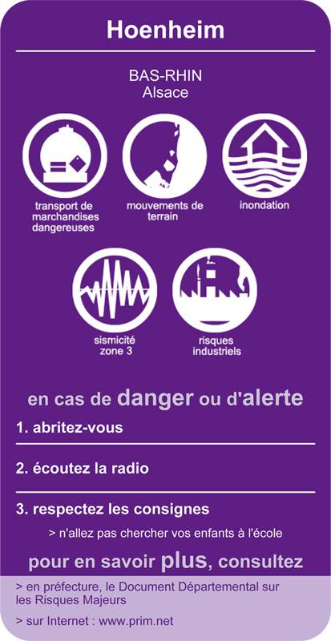

« Le citoyen a droit à l’information sur les risques encourus et sur les mesures de sauvegarde pour s’en protéger » telles sont les dispositions que le Code de l’Environnement a instaurées pour permettre à tout citoyen de mieux connaître son environnement et les éventuels risques auxquels il doit faire face. .
En application de ces dispositions, la commune de HOENHEIM met actuellement à jour son document d’information communal sur les risques majeurs (D.I.C.R.I.M.). A terme, un exemplaire sera à votre en mairie, 28 rue de la République et pourra être téléchargé sur cette page.
Le D.I.C.R.I.M présente les risques majeurs potentiels qui ont été recensés à savoir :
- les risques liés aux inondations
- le risque mouvement de terrain
- le risque de sismicité
- le risque de transports de matières dangereuses
- le risque industriel
Outre le recensement et la situation de ces risques sur le territoire de la commune, le D.I.C.R.I.M présente également les mesures d’ordre général qui sont prises par les pouvoirs publics à titre préventif, mais aussi les mesures particulières qui ont été réalisées par la municipalité pour éviter qu’un incident se produise. Si une crise devait avoir lieu, la municipalité par un permanent souci de protection des populations, en réduirait ses conséquences.
En complément de ce document d’information, la commune de HOENHEIM a également réalisé un Plan Communal de Sauvegarde (P.C.S.), un document interne, opérationnel, d’anticipation permettant en cas d’événement important qui nécessite par exemple un transfert ou un accueil de la population, de connaître immédiatement la conduite à tenir à travers l’installation d’une cellule communale de crise spécialement créée à cet effet. Il s’agit d’un document opérationnel interne de gestion de crise.
La gestion des risques fait partie des préoccupations quotidiennes de la municipalité soucieuse d’assurer une protection civile efficace et adaptée à ses concitoyens.